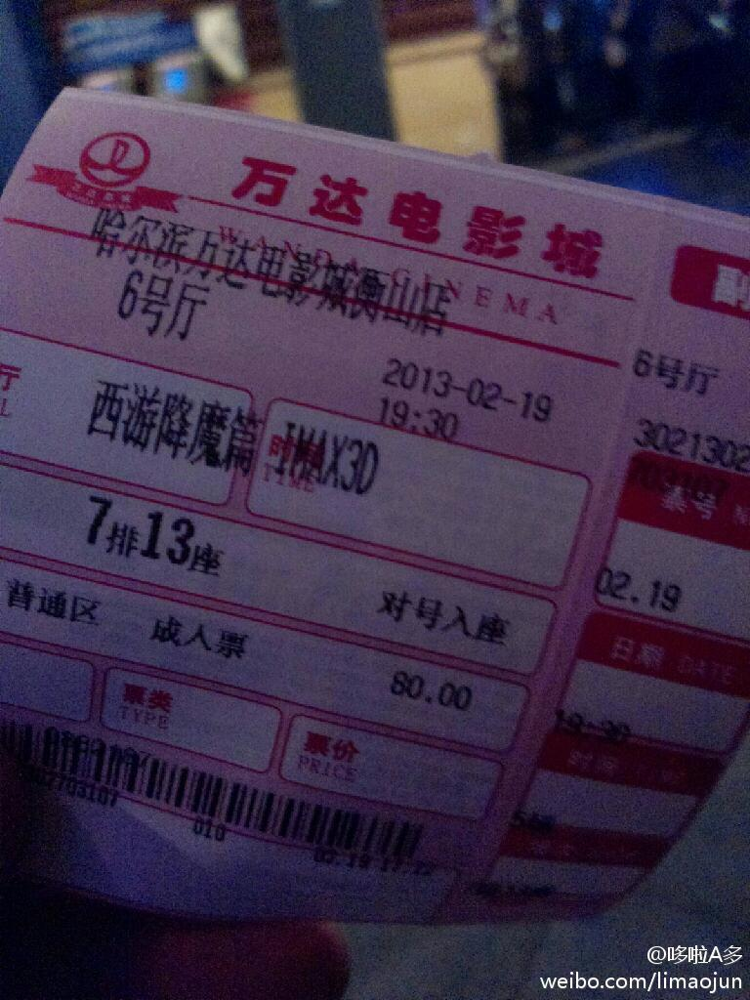

我无语了，昨天刚说过他能顺利的发微博就已经很幸运了结果今天谢先生就不幸了。悲哀！ //@台大的阿杜:紅一天就掛了阿---:该账号因被投诉违反法律法规和《微博社区公约》的相关规定，现已无法查看。查看帮助 网页链接
在路上我还在想，不上班的日子真爽，看看电影都没人抢位，因为大家都上班，到了万达附近才知道我这想法是大错特错啊！今天星期二，影院半价日，人乌泱乌泱的，地下停车场的卡都发没了，这时候我又相信同时拥有两三个户口的人是少数的了～十三亿人怎么也得有十亿左右是真实的！ 
回复@哈尔滨新浪乐居:绝大部分业主委员会的办公时都寄居在物业公司内，说白了，现在的业委会都是跟物业公司穿一条裤子的扯犊子选手，文雅点儿说，都是花瓶～ //@哈尔滨新浪乐居:业主委员会可以出面测量一下温度如何 收费是否合理 努力保护自己的权益---:抱歉，此微博已被作者删除。查看帮助： 网页链接